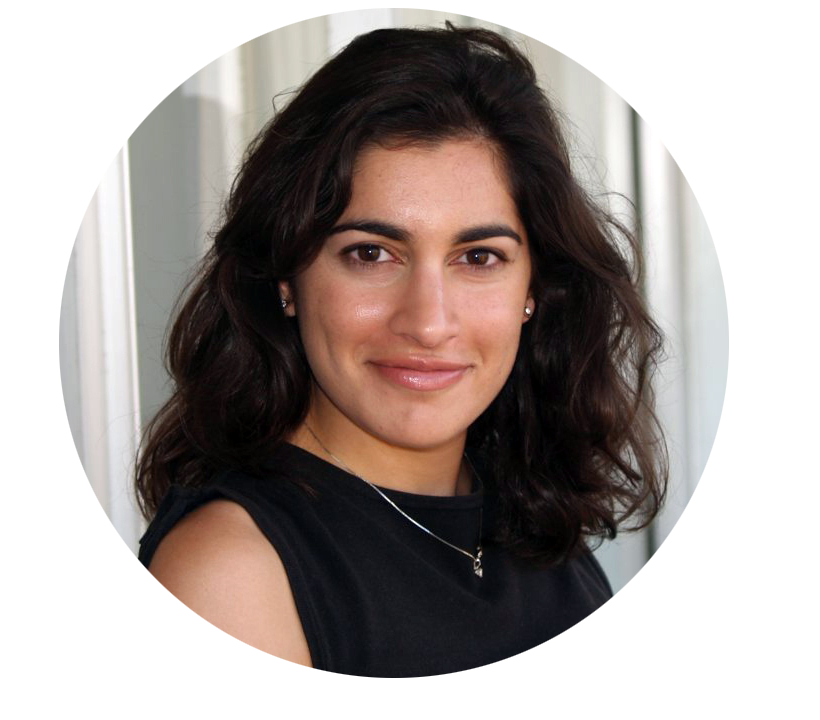

I have 13 years of experience working in space science. For the last 11 years, I was a research scientist at Stanford University in the W. W. Hansen Experimental Physics Laboratory, where I studied the Sun and space weather as a member of the NASA Solar Dynamics Observatory science team. My research focused on analyzing large data sets, on the scale of terabytes to petabytes, that describe the Sun and space weather, and I authored a book on the subject titled Machine Learning, Statistics, and Data Mining for Heliophysics. My research garnered media attention from multiple outlets, including Scientific American and The Mercury News.
I previously worked at the Harvard-Smithsonian Center for Astrophysics, where I studied solar flares as a member of two NASA missions called TRACE and Hinode.
I remain committed to the open source scientific software community as Vice Chair of the Advisory Board for the SunPy Project, which develops open source scientific software for time series and multispectral image data analysis in Python, and Data Science Editor for the Journal of Open Source Software (JOSS). I also write popular science articles as a Contributing Editor at Sky & Telescope magazine.
Download CV